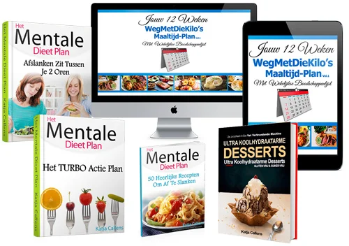

Gewoon afvallen: zo werkt het
Afvallen zonder iets te verbieden. Waarom een halve kilo per week genoeg is, wat de Schijf van Vijf zegt en welke valkuilen je makkelijk vermijdt.
Hoe werkt afvallen?
Afvallen werkt eigenlijk heel simpel: je valt af als je minder energie binnenkrijgt dan je lichaam verbruikt. Energie meten we in calorieën. Eet je elke dag een beetje minder dan je verbruikt, dan gaat je lichaam zijn eigen vet gebruiken.
Het lastige is niet de uitleg, maar het volhouden. Daarom gaat gewoon afvallen niet over streng zijn, maar over kleine dingen die je elke dag makkelijk kunt doen.
Waarom een halve kilo per week genoeg is
Het Voedingscentrum adviseert om niet meer dan ongeveer een halve kilo per week af te vallen. Zo is de kans het grootst dat je het volhoudt en dat het gewicht er ook af blijft. Hoeveel je daarvoor minder moet eten, verschilt per persoon.
Met snelle diëten verlies je vooral vocht en geen vet. En wie heel snel afvalt, komt vaak ook snel weer aan. Dat heet het jojo-effect.
De Schijf van Vijf in het kort
De Schijf van Vijf van het Voedingscentrum laat zien wat je elke dag nodig hebt. Je hoeft niets te schrappen. Je kiest wel vaker voor de gezonde versie.
| Groente en fruit | 250 gram groente en 2 stuks fruit per dag |
|---|---|
| Brood en granen | Kies volkoren: volkorenbrood, volkoren pasta en zilvervliesrijst |
| Eiwit | Vis, peulvruchten, ei, kip of een handje ongezouten noten |
| Zuivel | Magere of halfvolle melk, yoghurt en kaas |
| Smeer- en bereidingsvet | Zachte margarine of olie, met mate |

De bordregel
Je hoeft geen calorieën te tellen. Kijk gewoon naar je bord:
- De helft groente
- Een kwart vis, kip, ei of peulvruchten
- Een kwart volkoren rijst, pasta of aardappelen
Neem een iets kleiner bord. Je bord lijkt dan voller, en je eet vanzelf wat minder.
De 5 grootste valkuilen
- Ontbijt overslaan. Je krijgt later op de dag juist meer trek.
- Suiker in drinken. Frisdrank, sap en zoete koffie tellen flink mee, zonder dat je er vol van zit.
- 's Avonds snaaien. Plan je avondeten, en zet snoep uit het zicht.
- Te streng beginnen. Wie alles tegelijk wil veranderen, houdt het meestal niet vol.
- Te vaak wegen. Je gewicht schommelt per dag. Weeg hooguit één keer per week, op dezelfde dag en tijd.
Slaap en stress tellen ook mee
Wie slecht slaapt of veel stress heeft, krijgt vaak meer zin in zoet en vet eten. Probeer op tijd naar bed te gaan en neem af en toe rust. Het klinkt klein, maar het maakt afvallen echt makkelijker.
Veelgestelde vragen
Mag ik nog iets lekkers eten?
Ja. Wie zichzelf alles verbiedt, houdt het minder lang vol. Spreek met jezelf af wanneer je iets lekkers neemt, bijvoorbeeld op zaterdag.
Hoeveel moet ik bewegen?
De Gezondheidsraad adviseert minstens 150 minuten per week matig intensief bewegen, zoals stevig wandelen of fietsen. Bewegen helpt vooral om je spieren te houden terwijl je afvalt.
Ik val niet meer af, wat nu?
Dat is normaal. Je lichaam heeft na een tijdje minder energie nodig. Kijk of er weer ongemerkt extra's in je dag zijn geslopen, en beweeg wat meer.
Plannen voor gewoon afvallen naast elkaar
Wil je het niet alleen doen? Dit zijn de plannen voor gewoon afvallen. Kijk in de kolom Voor wie welke bij je past.
Je kiest bij de aanbieder. Via onze links krijgen wij een kleine vergoeding (#ad), jij betaalt niets extra.

Bronnen: Voedingscentrum: afvallen, Voedingscentrum: Schijf van Vijf en Gezondheidsraad: Beweegrichtlijnen 2017.